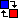

This application is a most simplistic tool for loading and manipulating multiband raster datasets that are in the ESRI binary grid format (also known as .BIL, .BIP and .BSQ files).
This manual can also be accessed by clicking on the Help dropdown () on the main toolbar, then choosing Help....
Datasets can be loaded by pressing the Load data... button on the main toolbar. After selecting a file the corresponding header file will be parsed, then all raster bands are loaded.
If parsing is successful and the dataset contains at least 3 raster bands, an RGB composite is created from the first three bands. If less than 3 bands are available the first band will be shown as a grayscale image.
skipbytes, byteorder,
bandrowbytes, totalrowbytes and bandgapbytes
are read but not supported.The composited image can be saved by pressing the Export image... button on the main toolbar. The image format can be selected in the save file dialog. Currently .PNG, .JPEG and .GIF files are supported.
The resolution and bounds of the exported image match that of the original dataset's regardless of the current zoom, position and interpolation settings.
Parsing (as well as other resource-intensive graphical operations) are performed asynchronously. You can track an operation's progress on the status bar. The currently running operation can be cancelled at any time by clicking on the status message.
The currently loaded dataset's raster bands are listed in the bottom of the left pane. Besides a thumbnail the list also contains buttons for per-band histogram equalization () and single-band grayscale display ().
Histogram equalization can also be performed on all bands at the same time by pressing the button in the column header.
An RGB composite image can be created from any three raster bands by associating bands with color components using the image manipulation toolbar:
Any of the three components can be omitted by selecting "(none)" from the dropdown list.
As some datasets contain true color bands in BGR order instead of RGB, the red and blue channels can be quickly swapped by pressing the  button.
If at least three raster bands are available, a composite can be created of the first three bands by clicking on the Create default RGB composite () button.
Simple image manipulation and filtering can be done using the Apply Filter and Histogram dropdowns on the image manipulation toolbar.
A histogram of the bands of the RGB composite can be shown by selecting the Show histogram option from the Histogram dropdown.
You can redistribute space between the image and the histogram view by clicking and dragging the empty space between the two panels.
When the histogram panel is shown, it is recalculated and redisplayed every time the image changes.
Histogram equalization can also be applied to the current composite from the Histogram dropdown. This is done by equalizing histograms on the involved bands and then recompositing the image.
Simple filters can be applied to the current image using the Apply filter dropdown. The following filters are available:
Y = 0.2126 × R + 0.7152 × G + 0.0722 × B
The message log records notices, warnings and errors concerning dataset parsing and image operations. A timestamp and a severity is associated with each entry. Time consumption of asynchronous operations is also recorded for debugging and performance measurement purposes.
This program is free software: you can redistribute it and/or modify it under the terms of the GNU General Public License as published by the Free Software Foundation, either version 3 of the License, or (at your option) any later version.
This program is distributed in the hope that it will be useful, but WITHOUT ANY WARRANTY; without even the implied warranty of MERCHANTABILITY or FITNESS FOR A PARTICULAR PURPOSE. See the GNU General Public License for more details.
You should have received a copy of the GNU General Public License along with this program. If not, see <http://www.gnu.org/licenses/>